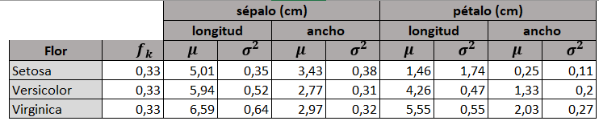

Métodos de clasificación#
Ejemplos#
Un clasificador es un método supervisado que permite entrenar un modelo para que determine la clase más probable que debemos asignar a un registro dado de características. Para ello el conjunto de entrenamiento tendrá una serie de \(N\) registros clasificados, que permiten al ordenador aprender a clasificar registros sin clase. Por ejemplo:
Detección de SPAM. En base a un conjunto de características de los correos se entrena con supervisión al ordenador para que determine si son o no SPAM.
Datos de microarrays. A partir de un subconjunto de genes óptimos para diagnosticar cancer.
Método Naïve Bayes#
Si la matriz \(X\) está compuesta por \(N\) observaciones (filas) con \(n\) características \(X_1, ..., X_i, ..., X_n\) que forman las columnas de la matriz.
Si la matriz de objetivos \(Y\) tiene \(m\) clases dadas por \(1, ..., k, ..., m\).
Una observación \(\bar{x}=(x_1, x_2, \cdots, x_n)\), no etiquetada, de acuerdo al Teorema de Bayes se etiqueta en aquella clase \(k\) que cumple:
Si hacemos la suposición Naïve de que los valores de las características \(X_i\) son independientes entre si y tienen una distribución normal gaussiana (para los valores \(X_i\)):
Donde:
\(N(x_i, \mu_{i,k}\thinspace, \sigma_{i,k}^2)\) : es la función de densidad normal gaussiana del valor \(x_i\) (columna \(X_i\)), siendo \(\mu_{i,k}\) y \(\sigma_{i,k}^2\) la media y la varianza de los valores de la columna \(X_i\) ‘filtrados’ por la clase \(k\).
\(f_k\) : es la frecuencia de la clase \(k\) en la matriz \(X\), que se obtiene a partir del número de observaciones etiquetadas como clase \(k\) sobre el total.
Observe que para definir el modelo son necesarias \(n \times m\) distribuciones normales distintas.
Entrenamiento con Naïve Bayes#
Un ejemplo de los datos que hay que calcular para entrenar el conjunto IRIS con el método Naïve Bayes se muestra en el siguiente gráfico:
{kind=link}
La verosimilitud que tiene, por ejemplo, la observación \(\bar{x} = (4.6, 3.6, 1.1, 0.2)\) de pertenecer a cada tipo de flor es:
from scipy.stats import norm # Importa el submodulo asociado a la distribución normal
vero_Setosa = 0.33*norm.pdf(4.6, 5.01, 0.35)*norm.pdf(3.6, 3.43, 0.38)*norm.pdf(1.1, 1.46, 1.74)*norm.pdf(0.2, 0.25, 0.11)
vero_Versic = 0.33*norm.pdf(4.6, 5.94, 0.52)*norm.pdf(3.6, 2.77, 0.31)*norm.pdf(1.1, 4.26, 0.47)*norm.pdf(0.2, 1.33, 0.2)
vero_Virgin = 0.33*norm.pdf(4.6, 6.59, 0.64)*norm.pdf(3.6, 2.97, 0.32)*norm.pdf(1.1, 5.55, 0.55)*norm.pdf(0.2, 2.03, 0.27)
vero_Setosa, vero_Versic, vero_Virgin
(0.13205703262668808, 9.890298012720692e-21, 2.0303781679609043e-28)
En este caso, la predicción será Setosa por tener el mayor valor de verosimilitud.
Aplicar el método Naïve-Bayes para clasificar el conjunto Iris#
El conjunto de datos de Iris se encuentra en la librería sk-learn, por lo que se importa de ahí
Primero se vuelca a un DataFrame, con 4 columnas con sus caracteristicas y una columna con la clasificación objetivo
Se muestra la descripción de cada uno de los valores (0, 1, 2) objetivo.
from sklearn.datasets import load_iris
import pandas as pd
iris = load_iris()
df = pd.DataFrame(iris.data, columns=iris.feature_names)
df['target']=iris['target']
df.head()
| sepal length (cm) | sepal width (cm) | petal length (cm) | petal width (cm) | target | |
|---|---|---|---|---|---|
| 0 | 5.1 | 3.5 | 1.4 | 0.2 | 0 |
| 1 | 4.9 | 3.0 | 1.4 | 0.2 | 0 |
| 2 | 4.7 | 3.2 | 1.3 | 0.2 | 0 |
| 3 | 4.6 | 3.1 | 1.5 | 0.2 | 0 |
| 4 | 5.0 | 3.6 | 1.4 | 0.2 | 0 |
iris['target_names']
array(['setosa', 'versicolor', 'virginica'], dtype='<U10')
Inicialmente se divide el conjunto de datos de entrada en Entrenamiento (75%) y Validación (25%). Conjuntos Train y Test#
Para hacer esta división del conjunto se utiliza una función de la librería sk-learn: train_test_split
Los parámetro train_test o test_size : indica el ratio que tiene el conjunto de entrenamiento o validación respecto al total.
El parámetro shuffle : indica si los datos se barajan antes de dividirse
El parámetro random_state : fija un valor de la semilla aleatoria, para que la división sea reproducible
El parámetro stratify : indica que la división se realiza proporcional a los valores de las etiquetas
Mas detalles : https://scikit-learn.org/stable/modules/generated/sklearn.model_selection.train_test_split.html
from sklearn.model_selection import train_test_split
X, y = df.values[:,0:4], df.values[:,4]
X_train, X_test, y_train, y_test =train_test_split(X, y, test_size=0.25, random_state=0, stratify=y)
y_test
array([0., 0., 0., 0., 1., 1., 1., 0., 1., 2., 2., 2., 1., 2., 1., 0., 0.,
2., 0., 1., 2., 1., 1., 0., 2., 0., 0., 1., 2., 1., 0., 1., 2., 2.,
0., 1., 2., 2.])
Se Resuelve utilizando el clasificador Naive Bayes de sklearn#
Se utiliza la clase GaussianNB de la librería naive_bayes (ver aquí). Lo primero es crear un objeto, por ejemplo clf_NB, llamandoa al constructor.
Llamando al método fit desde el objeto clf_NB se ajusta el modelo contra el conjunto de entrenamiento.
Para validar el modelo se predicen las observaciones X_test del conjunto de validación se comparan las clases obtenidas contra los valores correctos de y_test. El porcentaje de aciertos es la precisión del clasificador
from sklearn.naive_bayes import GaussianNB
import numpy as np
clf_NB = GaussianNB()
clf_NB.fit(X_train, y_train)
y_pred = clf_NB.predict(X_test)
accuracy = clf_NB.score(X_test, y_test)
print('Exactitud del clasificador (porcentaje de aciertos) = %.2f \n' %(100*accuracy))
Exactitud del clasificador (porcentaje de aciertos) = 97.37
Y la correspondiente matriz de confusión#
La matriz de confusión de una forma gráfica nos da los aciertos en la clasificación (diagonal principal) y dónde se encuentran los fallos.
from sklearn.metrics import confusion_matrix
import matplotlib.pyplot as plt
cm=confusion_matrix(y_test, y_pred)
print(cm)
[[13 0 0]
[ 0 13 0]
[ 0 1 11]]
from sklearn.metrics import ConfusionMatrixDisplay
from sklearn.metrics import confusion_matrix
cm = confusion_matrix(y_true=y_test, y_pred=y_pred)
cm_display = ConfusionMatrixDisplay(cm, display_labels=iris['target_names']).plot()
Arboles de decisión#
Los árboles de decisión son modelos predictivos formados por reglas binarias (si/no) con las que se consigue repartir las observaciones en función de sus atributos y predecir así el valor de la variable respuesta.
Ventajas
Los árboles son fáciles de interpretar aun cuando las relaciones entre predictores son complejas.
Los árboles pueden, en teoría, manejar tanto predictores numéricos como categóricos.
No se ven muy influenciados por datos atípicos (’outliers’).
Son muy útiles en la exploración de datos, permiten identificar de forma rápida y eficiente las variables (predictores) más importantes.
Pueden aplicarse a problemas de regresión y clasificación.
Desventajas
Su tendencia al sobreajuste (’overfitting’) y alta varianza. Sin embargo, existen técnicas más complejas que, haciendo uso de la combinación de múltiples árboles (bagging, random forest, boosting), consiguen mejorar en gran medida este problema.
Son sensibles a datos de entrenamiento desbalanceados (una de las clases domina sobre las demás).
No son capaces de extrapolar fuera del rango de los predictores observado en los datos de entrenamiento.
Implementados en sk-learn en las clases DecissionTreeClassifier y DecissionTreeRegressor
Obtención del árbol de decisión
La entropía es una forma de cuantificar el desorden de un sistema. En el caso de los nodos, el desorden se corresponde con la impureza. Si un nodo es puro, contiene únicamente observaciones de una clase, su entropía es cero.
Donde \(f_k\) representa la frecuencia o proporción de observaciones de la clase \(k\).
El algoritmo busca en el conjunto X aquella condición \(x_i \ge a\) que de lugar a una minimización de la entropia. La entropia se calcula directamente sobre y.
En el siguiente ejemplo inicialmente la entropia vale 1.585 y la condición ancho de pétalo \(\ge\) 0.8 se consigue partir en 2 hojas con la entropia mínima posible. El cálculo de la entropia inicial, atendiendo al recuento de cada clase sería:
-(37/112)*np.log2(37/112) -(37/112)*np.log2(37/112) -(38/112)*np.log2(38/112)
1.5848478277058313
from sklearn.tree import export_graphviz
from pydotplus import graph_from_dot_data
from IPython import display
from sklearn.datasets import load_iris
from sklearn.model_selection import train_test_split
from sklearn.tree import DecisionTreeClassifier
iris = load_iris()
X = iris.data
y = iris.target
X_train, X_test, y_train, y_test =train_test_split(X, y, test_size=0.25, random_state=0, stratify=y)
clf = DecisionTreeClassifier(criterion="entropy",random_state=0)
clf.fit(X_train, y_train)
dot_data = export_graphviz(clf,
feature_names=iris.feature_names)
graph = graph_from_dot_data(dot_data)
graph.write_png('./images/tree_iris.png')
display.Image("./images/tree_iris.png", width="500")
Existe la posibilidad de entrenar un conjunto de arboles de decisión, por ejemplo 100, y que la clasificación se obtenga por voto mayoritario de todos ellos. Es lo que se llama Bosque Aleatorio o Random Forest. Está disponible en sk-learn:
K vecinos cercanos#
El algoritmo de K Vecinos ( KNeighborsClassifier ) implementa la selección de la clase más probable a partir del voto mayoritario de las K observaciones más cercanas del conjunto X.
El cuello de botella computacional de este algoritmo es la búsqueda de los vecinos cercanos de una observación \(\bar{x}\) en X, que se presenta si el número de elementos de X es elevado y se usa un método de fuerza bruta. Por ello se suele estructurar el conjunto X de forma que sea más ágil en la busqueda de los vecinos. Esto se consigue con BallTree o KDTree, por ejemplo. El tipo de algoritmo de búsqueda se pasa en el parámetro algorithm, aunque por defecto lleva el valor ‘auto’ en el que se decide que estrategia tomar en función del tipo de datos existentes en el conjunto X.
from sklearn.neighbors import KNeighborsClassifier
clf_KV = KNeighborsClassifier()
clf_KV.fit(X_train, y_train)
y_pred = clf_KV.predict(X_test)
accuracy = clf_KV.score(X_test, y_test)
print('Exactitud del clasificador (porcentaje de aciertos) = %.2f \n' %(100*accuracy))
Exactitud del clasificador (porcentaje de aciertos) = 100.00